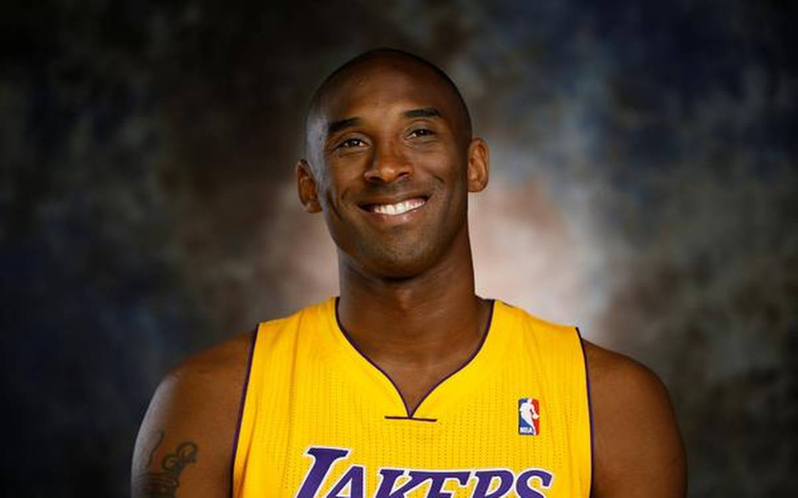

Hi I hope this website become mongolia's leading and worth visiting website though starting from scratch
This website covers all topics and allows you to read beneficial and worth reading articles
24
Kobe Bryant(1978-2020)

The first article I write on this website is about Kobe Bryant.
Kobe's and his daughter's death make all the people devastated.
Kobe's desire to win and substantial effort he make into basketball
is remarkable. Over the years he spent in NBA he is getting better
and better . There is no limit. First event that shows Kobe's mentality
is that He suffers from ACL at that time it is impossible to get back
to perfomance but he did that. It gives hope that player suffers from
ACL. He is remarkable. He is not naturally good player. He get it through
his hard work. He stay to get better on court while everyone go
home or party. Everyone in the league admit that he is
best player in the world.
He is not only nba player but also oscar-winner.